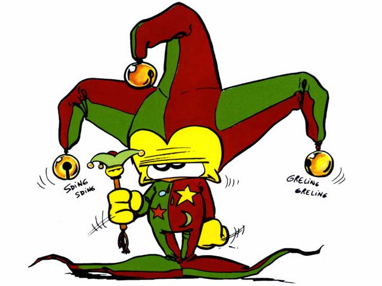

Forums galactiques > Assemblée Galactique : diplomatie officielle > Dépôt des Plaintes contre Commandants
Pages : 1 2 ... 4 5 6 ... 125 126
| La F.F.C Respect diplomatique : -31  02/07 ETU 19:50 | Score : 2 Détails La F.F.C est d'accord avec le commandant Gips.Néanmoins le commandant qui attaque notre cher Emyn Muil devra subir un chatiment,je propose que nous envoyons une flote dans le système 339 pour reprendre les planètes et les restituer au commandant Emyn Muil
| ||
| emyn muil Respect diplomatique : 113  02/07 ETU 19:55 | Score : 1 Détails inutile j'ai mobilisé la coalition the black wing contre commandant pour rendre les planètes que ce commandant a volé à d'autres commandants....
ceux qui se sont faits attaquer par le commandant sargatanas et qui n'a pas rendu les planètes préviennent ici nous vous aiderons! | ||
| La F.F.C Respect diplomatique : -31 02/07 ETU 20:00 | Score : 1 Détails Commandant,c'est une très bonne initiative,n'oubliez pas si vous avez besoin La Federing.Fusion.Corp. est la!
| ||
| emyn muil Respect diplomatique : 113 02/07 ETU 20:08 | Score : 1 Détails merci pour votre soutien...
je rappelle ceux qui ont subi une invasion de la part de ce commandant me préviennent ici! que nous puissions regrouper nos forces... | ||
| Feyd-Rautha Respect diplomatique : 266  02/07 ETU 22:55 | Score : 1 Détails Désormais pour vos plaintes, merci de contacter également le Ministère de la Justice par MP. Un greffier sera bientôt mis en place pour recueillir les plaintes et gérer directement l'instruction des affaires.
D'ici là, le Ministère de la Justice siègera dans des bâtiments que je mettrai à disposition [c'est à dire envoyez les MP à Feyd-Rautha]. Merci de spécifier dans le titre du formulaire "Plainte contre le commandant X" afin de faciliter le travail de notre administration. Que cela ne vous empêche pas de déposer vos plaintes ici, c'est juste pour accélerer le fonctionnement de la justice. Merci à tous de votre compréhension. | ||
| emyn muil Respect diplomatique : 113 02/07 ETU 22:59 | Score : 0 Détails pas de problème je suivrai ces indications mais ce comandant n'aura plus besoin de la justice nous lui permettrons d'avoir au maximum 5 planètes pour qu'il se calme....
ensuite nous le libèrerons... vu les ravages qu'il a occasionnés... | ||
| Dickinson Respect diplomatique : -2  03/07 ETU 00:38 | Score : 4 Détails Il fut un temps où ce genre de conflits bénins se réglait à coup de kamikazes et d'holocaustes hyper-atomique, et non en dialogues stériles et lansinants sur l'assemblée galactique, drainant irrémédiablement le niveau de l'assemblée vers le bas et la section "faits divers".
La nouvelle génération est décidément bien décevante, ou sont les tyrans et commandants de fer d'antant? si seulement Dieu m'entendait. | ||
| T.diablo Respect diplomatique : -13 03/07 ETU 00:55 | Score : -7 Détails tu as résond, sa me manque a moi aussi... maintenant, on doit ce prendre la tête pour attaquer et faire la guerre dans un jeu de guerre...
| ||
| melkor chaos Respect diplomatique : -4  03/07 ETU 10:39 | Score : -6 Détails Je suis d’acore a 80% avec vous sais bien beau de protéger les faible sa sais ok mais le problème sais que les puisent ne peuve même plus s’attaquer au personne apeurais dans leur niveau sen se retrouver avec tout le gouvernement sur le do si il no pas un bonne raison ou si il en invente pas une vite fais bien fais il se retrouve avec tout les autre qui le sois disent calme en lui enlèves quasiment tout sais planète et sais sa que l’on appelle un système démocratique ouin sais pas fort je vous concède que sais dure de trouver l’ultime solution mais bon sais pas fort quand les pussent ne peuvre pas s’attaquer entre eu et a la place y tente éliminer les petit sen que personne sen rendre conte moi je favorise toujours mon système au moins on sais sur qui tomber quand sa plante un système totalitariste mais a la seul différance sais que le dirigent est elu et a tout les pouvoir y peu en déléguer amis sais lui le boss suprême et si y abuse ou qui fais des crise erreur bien on na rien que la changer au prochaine au moins prendre des designer sais rapide comme sa ta pas a passer pas 3 personne mais bon on na pas encore vu se don est capable votre système alors épater nous on verra bien
| ||
| Gips Respect diplomatique : 17  03/07 ETU 11:15  | Score : 1 Détails plainte n°128784.12:
Objet:plainte contre grosfarceur Je dépose plainte contre le commandant GrosFarceur qui est censé être de la sécurité publique qui m'a attaqué un système qui m'appartenait entièrement. des MP sans réponse puis des attaque incessantes de la part des 2 coté le commandant Gros farceur n'avait aucune raison de me prendre toute ces planétes... Voila,amicalement gips | ||
| Scorbut Respect diplomatique : 1059  03/07 ETU 11:18 | Score : 2 Détails Scorbut, passant devant la salle à ce moment, entendit les dernières plaintes de commandants - qui, soit dit en passant, n'avaient rien à voir avec des plaintes contre d'autres commandants. Ces propos le firent réagir (ce qui n'était pas chose aisée de si bon matin avant le space-café). Il entra dans la salle, manqua de trébucher sur son propre pied, et se rattrapa de justesse à une table.
"Je ne devrais peut-être pas prendre la parole ici avec une haleine pareille", pensa-t-il. Les brumes de l'alcool commençaient tout juste à se dissiper. Ca n'allait pas être de la tarte pour sortir des phrases cohérentes. -Commandants! J'ai entendu que certains critiquaient le système qui se met actuellement en place... Ou avez-vous vu que cette galaxie devait être livrée au chaos? (HRP : Ou avez-vous vu que ce jeu est un jeu de guerre? /HRP) Si vous aussi vous venez à l'assemblée, c'est bien que les rouages diplomatiques de notre société vous intéressent un minimum, et donc que vous n'êtes pas au pouvoir uniquement pour faire la guerre. Il se tourne vers Dickinson, mais le mouvement étant un petit peu trop rapide, il fait un quart de tour de trop, et met quelques secondes à se tourner dans la bonne direction. Son visage a pâli, et il semble pris de nausées. -Commandant Dickinson, si vous voulez des tyrans sanguinaires ni pitié, (arghhh, saleté de gueule de bois) je ne peux que vous conseiller de vous attaquer au système 0, de le conquérir, et d'imposer votre loi à l'ensemble de la galaxie. Ainsi, vous aurez votre tyran. Scorbut, dont le visage était à présent tellement blanc qu'on ne se serait pas étonné d'apprendre que c'était en fait un bonhomme de neige (que ce soit clair : ce n'est pas le cas), essaya d'ajouter quelque chose, mais on n'entendit qu'un hoquet sortir de sa bouche. Il étonna tout le monde en se mettant à courir pour sortir de la salle. Les toilettes de l'assemblée allaient avoir besoin d'un petit nettoyage... (HRP : S'il vous plaît, utilisez un correcteur d'orthographe... Ca ne coûte pas grand chose, et c'est tellement plus agréable à lire. Et si c'était possible aussi, melkor chaos, il manque les touches de ponctuation sur ton clavier? Essaye au moins de mettre un point ou une virgule de temps en temps, et aussi un point à la fin de ton texte... /HRP) | ||
| FOU Respect diplomatique : 7  03/07 ETU 11:20 | Score : 7 Détails SERVICES DE TRADUCTION DE FOU.
Objet : message de melkor chaos. Je suis d’accord à 80% avec vous c'est bien beau de protéger les faibles, ça c'est ok, mais le problème est que les puissants ne peuvent même plus s’attaquer aux personnes apeurées dans leur système sans se retrouver avec tout le gouvernement sur le dos ! Et s'ils n'ont pas une bonne raison ou s'ils n'en inventent pas une vite fait bien fait, ils se retrouvent avec tous les autres qui les calment soi-disant en lui enlevant presque toutes leurs planètes et c'est ça que l’on appelle un système démocratique ! Ouin, c'est pas fort je vous concède que c'est dur de trouver l’ultime solution mais bon c'est pas fort ! Quand les puissants ne peuvent pas s’attaquer entre eux et qu'à la place ils tentent éliminer les petits sans que personne ne s'en rende compte, moi je favorise toujours mon système, au moins on sait sur qui tomber ! Quand ça plante un système totalitaire mais à la seule différence c'est que le dirigent qui est élu et a tous les pouvoirs. Il peut déléguer ses amis c'est lui le boss suprême et s'il abuse ou s'il fait des crises d'erreurs (ndlt: !!!??).. Ainsi on n'a plus qu'à le changer aux prochaines élections. Au moins, prendre des décideurs c'est rapide comme ça il est inutile de passer par trois personnes. Mais bon on n'a pas encore vu ve dont est capable votre système alors épatez-nous on verra bien !! NDLT : la moitié des traducteurs s'est suicidée, l'autre avoue son impuissance à comprendre certains passages... Nous nous en excusons. Tout comme nous nous excusons pour le temps qu'il nous a fallu pour traduire ce message. Temps qui a empêché l'édition. | ||
| melkor chaos Respect diplomatique : -4 03/07 ETU 11:59 | Score : 4 Détails /Hrp/
Oui je vous accorde que pour orthographe jais un clavier anglais donc sa aide pas et le fais que je sois dyslexique aide pas. Pour s’eu qui connaisse sais koi et pour seu qui le save pas sait maladie pour abréger royalement sa fais c'on inverse en écrivent et aide vraiment pas a écrire sais un problème au niveau des connections dans le cerveau. Mais au moins vous serais content aprandre que dans plus de 60% des ca si je ne me trope pas les dyslexique on une intelligence supérieur et des fois de loin a la moyenne comme Einstein étais dyslexique et autre et en passent je passe mais texte a word si vous avez un correcteur + bon a me présenter dit le moi je suis preneur tout de suite. Donc pour finir mais message son en général très pertinent mais dur a lire et sa je vous l’accorde volontiers mais sais pas pas manque effort je parant du temps tout de même pour les corriger. /hrp/ | ||
| Gros Veinard Respect diplomatique : 316  03/07 ETU 14:51 | Score : 1 Détails HRP
j'y suis aussi et j'écris également sur un clavier non francophone (et je vous défie d'avoir le même que le mien et pourtant j'écris correctement).. et cependant, les personnes qui prennent le temps de lire mes posts peuvent les comprendre, les votres sont illisibles... Ce n'est pas que de dire, je suis dyslexique, j'écris sur un clavier qui a pas les touches française, excusez moi... vous n'êtes pas le seul ... mais vous êtes le seul à écrire en petit négre (excusez moi pour l'expression). De plus, la dyslexie n'empeche pas d'écrire correctement, hors dans votre post ou vos posts, il y a des fautes a tous les mots... donc arretez de prendre les autres pour des crétins et achetez vous un dictionnaire et un bon livre de grammaire, vous verrez, ça passera tout de suite mieux// | ||
| Scorbut Respect diplomatique : 1059 03/07 ETU 15:05 | Score : 0 Détails HRP : (bon, on est parti sur du hrp, alors...)
Sauf le respect que je vous dois, Gros Veinard, la dyslexie peut expliquer une orthographe déplorable. Je connais une dyslexique, et c'est impressionant de voir les fautes impensables qu'elle fait. Evidemment, il est possible qu'il y ait de l'exagération de la part de melkor chaos, mais il est difficile de trancher. Ne parlez pas de ce que vous ne connaissez pas. /HRP | ||
| Tiz Respect diplomatique : 165  03/07 ETU 15:26 | Score : 0 Détails HRP =>
La dislexie peut expliquer des choses mais pas d'autres. Les "sait" à la place de "c'est" ben la dislexie l'explique très très mal... De plus la dislexie n'explique pas non plus le manque total de ponctuation et de paragraphes, très importants pour bien pouvoir lire (et éviter que les autres dislexiques n'arrivent pas à vous lire :s) enfin pour les fautes de frappe, ok. Je comprend aussi que vous fassiez plus de fautes que les autres, car c'est plus difficile d'apprendre dans ces conditions. Mais il ne faut pas en faire trop non plus... <= HRP | ||
| Feyd-Rautha Respect diplomatique : 266 03/07 ETU 15:48 | Score : 0 Détails Je rappelle (pour le commandant Gips particulièrement) que les plaintes doivent également être envoyée par MP au Ministère de la Justice avec comme sujet "Plainte contre le commandant X" (où X est le nom du commandant en question).
Merci également d'apporter quelques indices sérieux afin que nous puissions ou pas donner suite à vos affaires. Nous ne sommes pas des machines, merci donc de suivre les démarches administratives. | ||
| Gros Veinard Respect diplomatique : 316 03/07 ETU 18:25 | Score : 1 Détails Scorbut et cholera.. je suis également dyslexique alors je sais de quoi je parle...
Et le HRP se referma comme la boite de pendor lui conseilla! | ||
| melkor chaos Respect diplomatique : -4 03/07 ETU 21:42 | Score : 1 Détails
Melkor fi un pas en avent pour reprendre la parole . Bon de toute façon je vais faire passer mais ider quand j’an aurais dans très peu de linge , Se qui veux dire que sa sera pas trop long a lire en passent ou sais vrais aussi je suis pas une force de la nature en écriture et autre mais bon si tu est dyslexique Gros Veinard tu doit savoir que nous on écrit boucoup a la phonétique ? Sais très bizarre que tu le sache pas sais pour sa que je me trompe très souvent avec les sais (/hrp/ tu devrai voire normalement j’écrit sias lol je suis continuellement obliger de me corriger lol /hrp/) il existe même di dictionnaire pour dyslexique qui nais pas en ordre alphabétique mais pas phonétique lol . Oui je vous le jure ok il est dure a trouver mais sa existe et Gros Veinard toi tu fais qu’elle sorte de dyslexique il y a s’elle quand on parle très rare , et s’elle quand on li j’avais un prof qui en faisais de elle la et s’elle quand on écrit ? En passent c’est pas par se que toi tu fais pas de faut que la dyslexique est pas une rasions il a plusieurs stade déferant tu a petre un stade très léger . | ||
| Gros Veinard Respect diplomatique : 316 04/07 ETU 01:17 | Score : 2 Détails HRP:
word et ton ami pour toute correction il sera t'aider ... et oui dyslexique depuis 25 ans d'âge, soigné a la tige, formé a la grappe et depuis, le fruit a eu le temps de d'arriver à maturité....// |
Pages : 1 2 ... 4 5 6 ... 125 126
Forums galactiques > Assemblée Galactique : diplomatie officielle > Dépôt des Plaintes contre Commandants